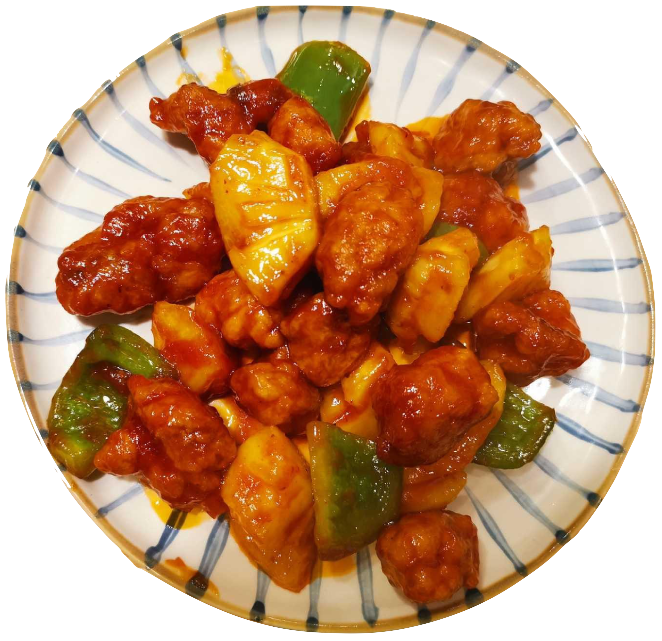

weet and Sour Pork is a famous Chinese dish from Guangdong.
It is known for its crispy pork and sweet and sour sauce.
The dish is made by frying battered pork and mixing it with a simple sauce.
In the following sections, its History, Recipe, and Cooking Method will be introduced.


